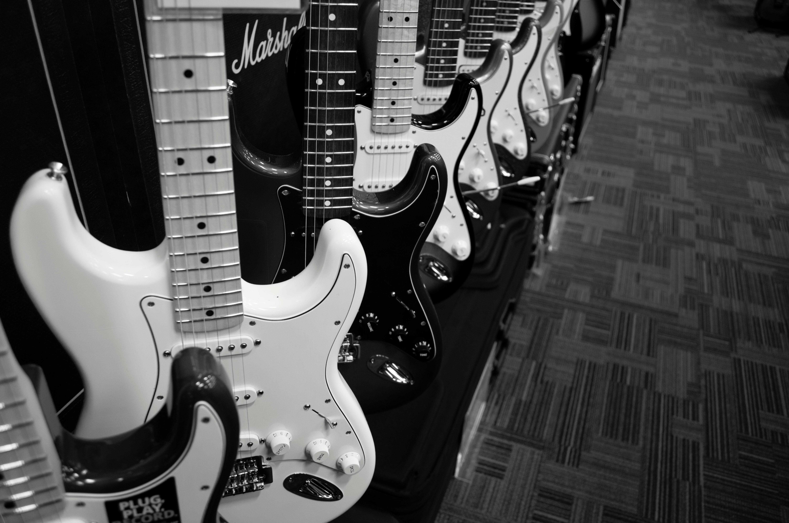
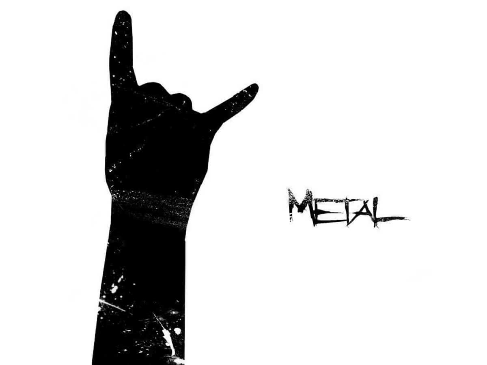

Egy könnyűzenei stílus, mely a második világháborút követő politikai feszültségek korában tört utat magának, egész kulturális forradalmat indítva. 1954. április 12-én Bill Haley a Rock Around the Clock című számának stílusa, megszólalása éles ellentétben állt a korra jellemző lágy, fülbemászó, érzelmes dallamok stílusával, amelynek olyan előadói voltak, mint például Frank Sinatra. A rockzene társadalmi hatásai közül a legkomolyabb, hogy megnövelte a szakadékot a háború után felnövekvő tinédzserek és szüleik között.
Az elektromos gitár története 1925-ben kezdődött, amikor George Beauchamp, az amerikai National String Instrument Corporation cég egyik alapítója elkezdett olyan módszereken kísérletezni, amivel a húrok rezgése elektromágneses eszközökkel elektromos jellé alakítható. A módszerre azért volt szükség, mert a kor big band és szving zenekaraiban játszó gitárosok akusztikus hangszereikkel túl halkak voltak, és szólamaikat elnyomta a többi hangszer.
A heavy metal (vagy egyszerűen csak metal, metálzene) rockzenei műfaj, amely 1968 és 1974 között jött létre. A heavy metalt életre hívó, blues-rock- és pszichedelikusrock-gyökerekkel rendelkező együttesek gitár- és dobközpontú, vastag, kemény hangzást alakítottak ki, melyet erős torzítás és gyors gitárszólók jellemeznek.
Hóman Vajk Gábor